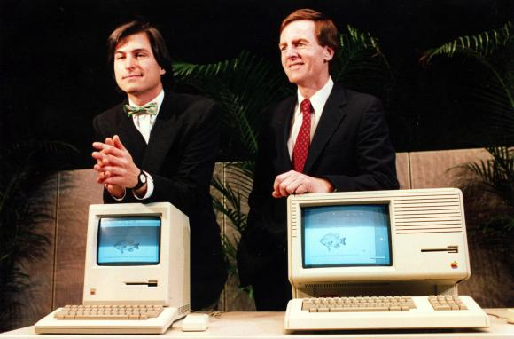

Chương 13

ike Markkula chưa bao giờ muốn trở thành Chủ tịch Hội Đồng Quản trị của Apple. Ông thích thiết kế ngôi nhà mới của mình, thích lái máy bay riêng của mình, và thích việc chọn lựa những cổ phiếu để đầu tư chứ chẳng hề hứng thú gì với việc giải quyết những mâu thuẫn hoặc lãnh đạo tổ chức. Ông đảm nhiệm vai trò này một cách miễn cưỡng, khi ông cảm thấy bắt buộc phải thay thế Mike Scott, ông hứa với vợ chỉ đảm nhiệm chức vụ này tạm thời. Đến cuối năm 1982, sau gần hai năm, bà đưa ra cho ông tối hậu thư: tìm một người thay thế vị trí của ông ngay lập tức.
Jobs biết rằng mình chưa sẵn sàng tự điều hành công ty, mặc dù phần nào đó ông cũng rất muốn thử. Bỏ qua một bên lòng kiêu ngạo vốn có, ông vẫn tự biết lượng sức mình. Markkula cũng đồng tình về điều đó; ông nói với Jobs rằng Jobs chưa đủ nhạy bén và không có nhiều kinh nghiệm quản lý để làm chủ tịch của Apple. Vì vậy, họ bắt đầu tìm kiếm một người thích hợp khác ở bên ngoài công ty.
Người mà họ muốn thuê về nhất là Don Estridge, người đã xây dựng nên bộ phận máy tính cá nhân của IBM ngay từ những ngày đầu và phát triển dòng sản phẩm PC mà mặc dù Jobs và nhóm của ông vẫn luôn xem thường nhưng doanh thu của sản phẩm đó còn vượt xa Apple.
Estridge đã lèo lái bộ phận của mình tại Boca Raton, Florida, tách khỏi tập đoàn mẹ Armonk tại New York một cách êm thấm, ông giống với Jobs ở khả năng thúc đẩy và truyền cảm hứng, nhưng khác với Jobs ở chỗ có thể khiến người khác nghĩ rằng những ý tưởng tuyệt vời của ông là do họ nghĩ ra. Jobs bay tới Boca Raton cùng lời đề nghị làm việc với mức lương một triệu đô-la và khoản tiền thưởng tương đương, một triệu đô-la, nhưng Estridge đã từ chối. Ông không phải là loại người nhảy khỏi con tàu của mình để gia nhập hàng ngũ kẻ thù. Ông muốn được là một phần của hạm đội, thành viên của Hải quân hơn là trở thành cướp biển, ông không mấy hài lòng với những câu chuyện mà Jobs đưa đẩy về công ty điện thoại. Mỗi khi ai đó hỏi ông về nơi làm việc, ông thường chỉ trả lời “IBM”.
Đến nước này thì Jobs và Markkula chỉ còn biết cậy nhờ Gerry Roche, một công ty săn đầu người uy tín, để tìm kiếm người cho vị trí còn khuyết. Họ quyết định không chú trọng vào các giám đốc điều hành ngành công nghệ nữa, những gì họ cần chỉ là một chuyên gia marketing hướng đến khách hàng biết về quảng cáo và có thể đánh bóng tên tuổi của công ty trên phố Wall. Roche đã để mắt đến người được mệnh danh là phù thủy marketing hướng đến khách hàng danh tiếng nhất thời bấy giờ, John Sculley, chủ tịch của bộ phận Pepsi Cola thuộc Tập đoàn Pepsi, người vận động cho chiến dịch quảng cáo Pepsi Challenge và mang về chiến thắng vẻ vang. Khi Jobs trò chuyện với sinh viên ngành quản trị kinh doanh của Đại học Stanford, ông được nghe nhiều điều tốt đẹp về Sculley, người cũng từng có lần đến đây trò chuyện. Vì vậy, ông nói với Roche rằng ông rất muốn được gặp Sculley.
Nền tảng của Sculley rất khác so với Jobs. Mẹ ông là một phụ nữ thuộc giới thượng lưu ở Manhattan, luôn đeo găng tay trắng mỗi khi đi ra ngoài, còn cha ông là một luật sư chân chính của phố Wall. Sculley từng được gửi đến học trường St. Mark, sau đó theo học lấy bằng cử nhân của trường Brown và bằng kinh doanh của trường Wharton, ông thăng tiến qua nhiều cấp bậc ở Tập đoàn PepsiCo từ vị trí chuyên gia marketing và quảng cáo sáng tạo, với niềm đam mê dành cho việc phát triển sản phẩm và công nghệ thông tin.
Sculley bay tới Los Angeles để hưởng lễ Giáng sinh với hai con tuổi vị thành niên của mình từ cuộc hôn nhân trước, ông đưa hai con đến tham quan một cửa hàng máy tính, và ông đã rất ngạc nhiên với việc các sản phẩm này được tiếp thị một cách nghèo nàn thế nào. Khi lũ trẻ hỏi tại sao đột nhiên ông lại hứng thú với máy tính đến vậy, ông tiết lộ rằng ông dự định đến Cupertino gặp Steve Jobs. Hai đứa trẻ vô cùng phấn khích. Chúng lớn lên giữa rất nhiều ngôi sao điện ảnh, nhưng với chúng, Jobs mới thực sự là một siêu sao. Điều này đã khiến Sculley cân nhắc nghiêm túc hơn về việc được thuê làm sếp của anh ta.
Khi đến thăm trụ sở chính của Apple, Sculley đã giật mình với các phòng ốc không hề phô trương và bầu không khí hết sức thoải mái. Ông để ý thấy “Hầu hết mọi người đều ăn mặc giản dị hơn nhiều so với kỹ thuật viên của PepsiCo”. Vào giờ ăn trưa, Jobs chỉ lặng lẽ chọn món salát cho mình, nhưng khi Sculley khẳng định rằng hầu hết các nhà điều hành đều nhận thấy máy tính quá khó để sử dụng so với giá trị của nó, Jobs không ngần ngại đáp trả:,“Chúng tôi muốn thay đổi cách thức mà mọi người sử dụng máy tính”.
Trên chuyến bay trở về nhà, Sculley đã ghi lại những nhận định của mình. Thành quả mà ông có được là một bản ghi chép dài tám trang về tiếp thị máy tính đến tay người tiêu dùng và về quản trị kinh doanh. Bản ghi chép đó dù đôi chỗ có phần tự tin thái quá, dầy đặc các cụm từ gạch chân, sơ đồ và bảng biểu nhưng nó đã thể hiện niềm hứng khởi mới được nhen lên của ông khi tìm cách bán một sản phẩm nào đó thú vị hơn Soda. Một trong số những khuyến nghị của Sculley là:
“Nên đầu tư vào việc quảng cáo theo cách tô vẽ với người tiêu dùng rằng tiềm năng của Apple có thể khiến cuộc sống của họ trở nên phong phú!” ông vẫn cảm thấy do dự không muốn rời Pepsi, nhưng Jobs thực sự đã cuốn hút ông. “Tôi đã bị thuyết phục bởi một thiên tài trẻ tuổi bốc đồng, và tôi nghĩ rằng sẽ thật tuyệt nếu được cùng làm việc và hiểu hơn về cậu ta”, ông nhớ lại.
Và thế là Sculley đồng ý gặp lại khi Jobs đến New York lần tới, nhân sự kiện giới thiệu máy tính cá nhân Lisa vào tháng 1 năm 1983 tại khách sạn Carlyle. Sau cả một ngày trả lời phỏng vấn liên miên, nhóm nghiên cứu của Apple vô cùng ngạc nhiên khi thấy một vị khách đột nhiên đi vào sảnh. Jobs nới lỏng cà vạt và giới thiệu Sculley với tư cách là chủ tịch của Pepsi và là một khách hàng tiềm năng lớn của công ty. Sau khi John Couch giải thích cặn kẽ về máy tính Lisa, Jobs cũng ca ngợi hết lời, ông sử dụng những từ gây ấn tượng mạnh yêu thích của mình như “cuộc cách mạng” hay “không thể tin nổi”, và khẳng định chiếc máy này sẽ thay đổi bản chất cách thức con người tương tác với máy tính.

sculley vá jobs
Sau đó họ đến ăn ở nhà hàng Four Seasons, một thiên đường lung linh sang trọng và đầy quyền lực. Khi Jobs còn mải chọn một suất ăn thuần chay đặc biệt thì Sculley lại nói chuyện về những thành công trong marketing của Pepsi, về chiến dịch quảng cáo Pepsi Generation (tạm dịch: thế hệ Pepsi), Sculley nói rằng, nó nhằm mục đích không chỉ để bán một sản phẩm mà còn hướng đến việc tạo ra một lối sống mới và cái nhìn lạc quan. “Tôi cho rằng Apple cũng có cơ hội để tạo ra một thế hệ của riêng Apple.”. Jobs nhiệt tình đồng ý. Ngược lại, chiến dịch quảng cáo Pepsi Challenge (tạm dịch thách thức Pepsi) lại tập trung vào sản phẩm, bao gồm các mẫu quảng cáo, sự kiện và hoạt động PR để khuấy đảo sự chú ý. Khả năng biến sự ra đời của một sản phẩm mới trở thành thời khắc gây phấn khích cho toàn quốc gia, Jobs nhấn mạnh, chính là những gì ông và Regis McKenna đang muốn thực hiện ở Apple.
Khi họ kết thúc cuộc trò chuyện thì đã gần đến nửa đêm. “Đây là một trong những buổi tối thú vị nhất đời tôi”, Jobs nói với Sculley như vậy trên đường trở về khách sạn Carlyle. “Tôi không thể diễn tả được hết niềm vui sướng của mình.” Và đêm đó, khi Sculley về đến nhà ở Greenwich, Connecticut, ông đã mất ngủ. Thương lượng với Jobs thú vị hơn nhiều so với việc đàm phán với mấy chai soda. “Nó kích thích tôi, khuấy động mong ước lâu nay của tôi được trở thành kiến trúc sư của những ý tưởng”, ông hồi tưởng lại. Sáng hôm sau, Roche gọi cho Sculley. “Tôi không biết các anh đã làm gì đêm qua, nhưng để tôi nói cho anh hay, Steve Jobs cực kỳ phấn khích”, ông nói.
Và sau đó màn “tán tỉnh” giữa họ tiếp diễn, Sculley tỏ ra mình còn cân nhắc nhưng không quá khó để bị thuyết phục. Jobs đáp máy bay cho chuyến viếng thăm vào một ngày thứ bảy trong tháng 2, và lái một chiếc xe limo tới Greenwich, ông đến ngôi biệt thự mới xây đầy vẻ phô trương của Sculley, ngôi nhà được thiết kế với rất nhiều khung cửa sổ, nhưng thứ mà ông ngưỡng mộ nhất là những cánh cửa được làm bằng gỗ sồi lâu năm nặng tới hơn 100 cân đươc lắp đặt một cách chắc chắn và cân bằng đến mức vẫn có thể mở được chỉ với một cái chạm tay. “Steve đã bị cuốn hút vào điều đó bởi ông ấy, giống như tôi, là một người cầu toàn”, Sculley nhớ lại. Do đó, từ thiện cảm ban đầu giống như bị cuốn hút bởi một ngôi sao sáng, Sculley nhận ra ở Jobs những phẩm chất mà ông thấy ở chính mình.
Sculley thường lái một chiếc Cadillac, nhưng biết được sở thích của vị khách, ông mượn chiếc Mercedes 450SL của vợ để đưa Jobs đến chiêm ngưỡng trụ sở chính xa hoa rộng 114 mẫu Anh của Tập đoàn Pepsi, trái ngược với hình ảnh nghèo nàn của Apple. Đối với Jobs, đó là biểu tượng cho sự khác biệt giữa một nền kinh tế kỹ thuật số non trẻ với một trong những tập đoàn hùng manh nằm trong bảng xếp hạng Fortune 500. Một lối đi quanh co dẫn qua bãi cỏ được cắt tỉa cẩn thận và một khu vườn trưng bày nhiều tác phẩm điêu khắc (có cả các những tác phẩm của Rodin, Moore, Calder và Giacometti), hướng đến một tòa nhà được xây dựng bằng bê tông và kính do Edward Durell Stone thiết kế. Trong văn phòng lớn của Sculley có một tấm thảm Ba Tư, chín cửa sổ, một khu vườn nhỏ riêng tư, một góc làm việc và một phòng tắm cá nhân. Khi Jobs tận mắt thấy trung tâm thể dục của tập đoàn, ông ngạc nhiên với việc các nhà quản lý được dành riêng một khu vực, với bể bơi nước nóng riêng, tách biệt với khu vực của nhân viên. “Thật kỳ lạ”, ông nói.
Sculley vội vã đồng tình. “Thực tế ở đây là như vậy, tôi cũng không đồng tình với chuyện này, tôi cũng thường xuyên ghé qua và tập trong khu vực của nhân viên”, ông nói.
Họ gặp lại nhau một vài tuần sau đó ở Cupertino, khi Sculley trên đường trở về từ một cuộc hội thảo về quy ước đóng chai Pepsi tại Hawaii. Mike Murray, CMO cho Macintosh, đã lên kế hoạch cho nhóm Mac chuẩn bị tiếp đón Sculley, nhưng ông không hề biết mục đích thực sự của chuyến viếng thăm này. “Có lẽ PepsiCo muốn mua hàng nghìn máy Mac trong vài năm tới”, ông diễn giải trong một bản ghi nhớ cho các thành viên trong nhóm Macintosh.
“Trong năm qua, ngài Sculley và ngài Jobs đã trở thành bạn bè thân thiết. Sculley được xem là một trong những chuyên gia marketing tài giỏi nhất hiện nay, vì thế, chúng ta cần tiếp đón ông ấy thật chu đáo”.
Jobs muốn chia sẻ với Sculley niềm phấn khích của mình đối với máy tính Macintosh.
“Sản phẩm này có ý nghĩa với tôi nhiều hơn bất cứ thứ gì tôi từng làm trước đó”, ông nói. “Tôi muốn anh là người ngoài Apple đầu tiên được xem nó.” ông từ từ kéo tấm màn che nguyên mẫu chiếc máy lên để bắt đầu cuộc trình diễn. Sculley nhận thấy Jobs gây ấn tượng không kém gì chiếc máy của ông. “Ông ấy có vẻ giống với một nghệ sĩ biểu diễn hơn là một doanh nhân. Từng cử động dường như đều được tính toán, như thể đã được luyện tập từ trước, để tạo một cơ hội trong khoảnh khắc”.
Jobs đã yêu cầu Hertzfeld và cả nhóm chuẩn bị một đoạn video để khiến Sculley thích thú.
“Anh ta thực sự rất thông minh”, Jobs nói. “Anh không thể tưởng tượng được là anh ta thông minh đến thế nào đâu.” Lời giải thích rằng Sculley có thể mua rất nhiều máy Macintosh cho Pepsi “nghe có vẻ rất khả nghi với tôi”, Hertzfeld nhớ lại, nhưng ông và Susan Kare vẫn thực hiện một đoạn video trong đó những nắp chai và lon Pepsi nhảy múa xung quanh logo Apple. Hertzfeld hào hứng đến mức ông đã vẫy tay khi bản mẫu được bật lên, nhưng Sculley dường như chẳng mấy ấn tượng.
“Anh ta hỏi một số câu hỏi, nhưng có vẻ như chẳng hề thực sự quan tâm đến chúng”, Hertzfeld nhớ lại. Cuối cùng thì ông ấy cũng không niềm nở với Sculley nữa. “Anh ta vô cùng giả tạo, một kẻ hoàn toàn giả tạo”, ông nói. “Anh ta vờ là mình quan tâm đến công nghệ, nhưng thực ra là không.
Đó là một gã làm tiếp thị, và điểm chung của những gã tiếp thị là: những kẻ được trả tiền để giả tạo”.
Câu chuyện đi đến hồi kết khi Jobs đến New York vào tháng 3 năm 1983 để chuyển những lời tán tỉnh thành một câu chuyện tình lãng mạn. “Tôi nghĩ rằng anh là người tôi cần”, Jobs nói khi họ đi qua Công viên Trung tâm. “Tôi muốn anh đến và làm việc với tôi. Tôi có thể học hỏi rất nhiều từ anh”. Jobs, người luôn tìm kiếm hình bóng người cha trong quá khứ, biết chính xác làm cách nào để đánh bại cái tôi và sự bất trị của Sculley. Và cách đó thực sự hiệu quả. “Tôi đã say mê anh ta”, Sculley thừa nhận sau đó. “Steve là một trong những người sáng chói nhất mà tôi từng gặp. Tôi có chung với anh ta niềm đam mê những ý tưởng”.
Sculley là người đam mê lịch sử nghệ thuật, ông đã đưa Jobs đến bảo tàng Metropolitan để làm một thử nghiệm nhỏ xem liệu Jobs có thực sự sẵn sàng học hỏi từ những người khác hay không. “Tôi muốn biết anh ta có thể nắm bắt nhanh như thế nào một vấn đề mà anh ta hoàn toàn không có kinh nghiệm trước đó”, ông nhớ lại. Khi họ đi lướt qua các cổ vật Hy Lạp và La Mã, Sculley giải thích chi tiết về sự khác biệt giữa các tác phẩm điêu khắc cổ xưa của thế kỷ VI trước Công nguyên và các tác phẩm điêu khắc của Periclean một thế kỷ sau đó. Jobs đón nhận những kiến thức mà ông chưa bao giờ được học ở trường đại học, mải mê đắm chìm trong nó. “Tôi có cảm giác rằng mình sẽ là giảng viên của một sinh viên xuất sắc”, Sculley nhớ lại. Một lần nữa, ông đã thêm tự tin rằng họ giống nhau: “Tôi thấy ở anh ta hình ảnh phản chiếu của chính tôi khi còn trẻ.
Khi đó, tôi quá thiếu kiên nhẫn, cứng đầu, kiêu ngạo và hung hăng. Tâm trí của tôi bùng nổ với những ý tưởng, thường muốn loại bỏ tất cả mọi thứ khác. Tôi cũng không chịu dung nạp những người không phù hợp với nhu cầu của tôi.”
Và họ tiếp tục đi bộ một đoạn dài, Sculley tâm sự rằng mình đã từng đến khách sạn Left Bank ở Paris để vẽ phác họa, nếu không trở thành một doanh nhân, ông có lẽ đã là một họa sĩ. Jobs đáp lời rằng nếu ông không làm việc với máy tính, ông có lẽ ông sẽ trở thành một nhà thơ Paris. Họ tiếp tục đi xuống Broadway đến hãng thu âm Colony phố Bốn mươi chín, nơi Jobs chia sẻ với Sculley loại nhạc mà ông yêu thích, trong đó có Bob Dylan, Joan Baez, Ella Fitzgerald và nghệ sĩ nhạc jazz Windham Hill. Sau đó, họ trở lại tòa nhà San Remo số bảy mươi tư ở phía đông Công viên Trung tâm, nơi Jobs đã lên kế hoạch mua một căn hộ ở tầng mái của tòa nhà.
Họ đi đến một thỏa thuận hoàn hảo ở một góc sân thượng, Sculley đứng tựa người vào tường vì ông sợ độ cao. Đầu tiên, họ thảo luận về tiền bạc. “Tôi nói với anh ấy rằng tôi muốn mức lương một triệu đô-la và một triệu tiền thưởng khi ký hợp đồng”, Sculley nói. Jobs tuyên bố sẽ đáp ứng điều đó. “Thậm chí nếu tôi phải trả tiền cho anh bằng tiền túi của tôi”, ông nói. “Chúng ta sẽ phải giải quyết hết những vấn đề đó, vì anh là người tuyệt nhất mà tôi từng gặp. Tôi biết anh hoàn hảo dành cho Apple, và Apple xứng đáng nhận được những gì tốt nhất”. Jobs nói thêm rằng ông chưa bao giờ làm việc cho một người mà ông thực sự tôn trọng, nhưng ông biết rằng Sculley là người có thể đưa ra nhiều lời khuyên hữu ích nhất. Và Jobs nhìn ông bằng một ánh nhìn kiên định không chớp.
Sculley thốt lên một câu nói ý nhị cuối cùng, một gợi ý ám chỉ rằng có thể họ chỉ cần trở thành bạn bè và ông vẫn có thể đưa cho Jobs những lời khuyên bên ngoài. “Bất cứ lúc nào anh đến New York, tôi đều rất vui lòng được tiếp đón anh”. Sau đó, ông kể lại thời điểm đáng nhớ: “Steve cúi đầu xuống và nhìn chằm chằm vào đôi chân mình. Sau giây phút im lặng nặng nề, anh ta nói ra một câu thách thức đã ám ảnh tôi nhiều ngày sau đó. ‟Anh muốn dành cả phần đời còn lại để bán nước ngọt có ga hay muốn có một cơ hội cùng tôi thay đổi thế giới?‟” Sculley cảm thấy như thể mình đã bị hạ gục hoàn toàn, ông không có phản ứng nào ngoài thái độ ngầm bằng lòng. “Anh ta có một khả năng kỳ lạ để luôn đạt được những gì anh ta muốn, biết cách đánh giá một người và biết chính xác cần nói những gì để có thể gây ảnh hưởng đến họ”, Sculley nhớ lại. “Lần đầu tiên trong vòng bốn tháng tôi nhận ra mình không thể nói không”. Khi mặt trời mùa đông đã hửng, họ rời khỏi căn hộ và đi bộ qua công viên tới khách sạn Carlyle.
Tuần trăng mật
Sculley đến California vào năm 1983 đúng lúc Apple tái cơ cấu hoạt động quản lý tại Dunes Pajaro. Dù đã bỏ lại tất cả ở Greenwich, nhưng ông vẫn khá khó khăn khi điều chỉnh để có thể hòa nhập với không khí ở đây. Trước cửa phòng họp, Jobs ngồi dưới sàn nhà trong tư thế thiền yoga và lơ đãng đùa nghịch với những ngón chân của mình. Sculley đã cố gắng điều hành cuộc họp, ông muốn thảo luận làm về cách cá biệt hóa các sản phẩm Apple II, Apple III, Lisa, Mac, và liệu có cần thiết tổ chức công ty thành các bộ phận riêng theo từng dòng sản phẩm, hoặc phân chia theo thị trường hay chức năng. Tuy nhiên, các cuộc thảo luận đã biến thành nơi đưa ra những ý tưởng ngẫu nhiên, khiếu nại và tranh luận.
Trong một cuộc thảo luận, Jobs tấn công nhóm Lisa vì sản xuất một sản phẩm không thành công. “Thực ra”, một người nào đó phản bác, “Ông cũng vẫn chưa hoàn thiện máy Macintosh cơ mà. Sao ông không đợi cho đến khi sản phẩm của ông ra mắt ròi hãy chỉ trích người khác”. Sculley không khỏi ngạc nhiên, ở Pepsi không ai dám thách thức chủ tịch như thế. “Tuy nhiên, ở đây, mọi người bắt đầu tỏ thái độ với Steve.” Điều đó khiến ông nhớ lại một câu bông đùa mà ông nghe được từ những nhân viên quảng cáo của Apple: “Sự khác biệt giữa Apple và lính trinh sát là gì? Đó là lính trinh sát bị giám sát.”
Đúng vào lúc họ đang cãi nhau, một trận động đất nhỏ xảy ra khiến căn phòng rung lên.
“Chạy theo hướng bãi biển”, ai đó hét lên. Mọi người chạy qua ùa ra cánh cửa. Sau đó, tiếng ai đó hét lên rằng các trận động đất trước đó đã tạo ra một làn sóng thủy triều, lập tức tất cả họ đều quay lại và chạy theo hướng khác. “Sự do dự, những mâu thuẫn, bóng ma của thảm họa tự nhiên, tất cả đều là điềm báo trước những gì sẽ xảy đến”, Sculley viết lại sau đó.
Một sáng thứ bảy, Jobs mời Sculley và vợ của ông, Leezy, đến chơi vào bữa sáng. Khi đó ông sống trong một ngôi nhà khá đẹp xây dựng theo phong cách Tudor ở Los Gatos cùng với bạn gái của mình, Barbara Jasinski một phụ nữ đẹp, thông minh và dè dặt làm việc cho công ty Regis McKenna. Leezy mang ra một chảo trứng ốp-lết. (Jobs đã nới lỏng chế độ ăn uống thuần chay nghiêm ngặt của mình lúc đó). “Tôi xin lỗi, tôi không thích nhà có quá nhiều đồ đạc”, Jobs thành thật. “Tôi không quen với chuyện đó.” Đó là một tật có từ lâu của Jobs: Những tiêu chuẩn về độ chính xác của ông kết hợp với lối sống thanh đạm khiến cho ông cảm thấy miễn cưỡng mỗi lần phải mua bất cứ đồ đạc nào. Ông chỉ có một chiếc đèn Tiffany, một bàn ăn cổ và một đầu đĩa video laser cùng một chiếc ti vi Sony, và những cái đệm trên sàn thay cho ghế sô-pha. Sculley mỉm cười và hồi tưởng về “cuộc sống điên cuồng và khổ hạnh trong một căn hộ lộn xộn của thành phố New York” những năm đầu trong sự nghiệp của ông.
Jobs tâm sự với Sculley rằng ông tin là ông sẽ chết trẻ, vì vậy ông cần hoàn tất mọi thứ một cách nhanh chóng để có thể để lại dấu ấn của mình trong lịch sử thung lũng Silicon. “Tất cả chúng ta đều chỉ có một khoảng thời gian nhất định trên thế giới này”, ông nói với Sculleys khi họ ngồi quanh bàn buổi sáng hôm đó. “Có lẽ chúng ta chỉ có cơ hội làm một vài điều thực sự tuyệt vời và phải làm cho thật tốt. Không một ai trong chúng ta có thể biết mình sẽ được ở đây trong bao lâu, cũng giống như tôi, nhưng tôi tin là là tôi có để thực hiện rất nhiều điều trong khi tôi còn trẻ.”
Jobs và Sculley nói chuyện với nhau rất thường xuyên một ngày trong những tháng đầu.
“Steve và tôi đã trở thành bạn tâm giao, gần như là tri kỉ”, Sculley chia sẻ. “Chúng tôi thích lối nói nửa chừng hoặc bỏ ngỏ.” Jobs luôn khiến Sculley cảm thấy hãnh diện. Khi ông đáp trả bằng một câu nào đó, Jobs sẽ nói điều tương tự như “Chỉ có cậu mới hiểu được ý tôi”. Lúc nào họ cũng có thể nói với nhau rằng họ cảm thấy hạnh phúc như thế nào khi được ở bên cạnh nhau và làm việc cùng nhau. Và mỗi khi có cơ hội chỉ ra một điểm tương đồng với Jobs, Sculley lại nói điều đó ra.
Chúng tôi có thể đối đáp được trúng ý của nhau bởi vì chúng tôi có chung lối tư duy. Steve sẽ đánh thức tôi vào lúc 2 giờ sáng bằng một cú điện thoại chỉ để chia sẻ về một ý tưởng đột nhiên nảy ra trong tâm trí mình. “Xin chào! Tôi đây”, ông nói trong khi người nghe còn đang mơ màng, hoàn toàn không có ý niệm gì về thời gian. Tôi cũng từng làm điều tương tự trong những tháng ngày còn làm việc tại Pepsi. Steve sẽ biến nó thành một bài thuyết trình vào sáng hôm sau, với những dẫn chứng và văn bản. Tôi cũng từng như vậy khi đấu tranh để đưa quyền tự do đóng góp ý kiến trở thành một công cụ quản lý quan trọng trong những ngày đầu tiên của tôi tại Pepsi. Là một nhà quản lý trẻ, tôi luôn thiếu kiên nhẫn chờ đợi mọi việc được thực hiện và thường cho rằng mình có thể làm tốt hơn. Vì vậy, đôi khi tôi như thấy chính mình trong hình ảnh của Steve vậy. Những điểm tương đồng kỳ lạ, và chúng giúp chúng tôi gắn kết để cùng phát triển.
Điều này chỉ là ảo tưởng, và đó là một công thức cho thảm họa. Jobs cũng sớm cảm nhận được điều đó. “Chúng tôi có cách nhìn nhận khác nhau, quan điểm khác nhau về con người, các giá trị khác nhau”, Jobs nhớ lại. “Tôi bắt đầu nhận ra điều này sau vài tháng anh ta đến. ông ta không thích ứng nhanh chóng, và những kẻ ông ta muốn làm việc cùng là những kẻ kém cỏi.” Tuy nhiên, Jobs biết rằng mình có thể thao túng Sculley bằng cách củng cố niềm tin của ông ta rằng họ giống nhau. Và khi Sculley càng tin vào điều đó, thì nỗi khinh bỉ của Jobs càng tăng lên. Những người khôn ngoan trong nhóm Mac, như Joanna Hoffman, đã sớm nhận ra những gì đang xảy ra và biết rằng chắc chắn nó sẽ dẫn đến một sự đổ vỡ. “Steve khiến Sculley cảm thấy mình thật đặc biệt”, bà nói. “Sculley không bao giờ biết điều đó. Sculley đã trở nên mê muội, Jobs mong chờ ở Sculley những cá tính mà ông ta không hề có. Khi đã rõ ràng rằng Sculley không đáp ứng được kỳ vọng, Steve đã gây ra một cuộc chiến khó xử.”
Lòng nhiệt tình của Sculley cũng dần giảm xuống. Một điểm yếu của Sculley khi điều hành một công ty chưa ổn định là mong muốn làm hài lòng những người khác, một trong những đặc điểm không hề giống Jobs. Ông là một người lịch sự, điều này khiến ông không ưa sự khiếm nhã của Jobs đối với những đồng nghiệp của họ. “Chúng tôi sẽ đến nơi họ phát triển máy Mac vào 11 giờ đêm”, ông nhớ lại, “và họ sẽ đưa cho Jobs xem những mã code hiển thị. Trong vài trường hợp, thậm chí anh ta còn không thèm nhìn vào chúng. Anh ta cầm báo cáo lên và ném lại vào mặt họ.
Tôi muốn nói, „Sao anh lại cư xử với họ như vậy?‟ Và Jobs sẽ nói, Tôi biết họ còn có thể làm tốt hơn.‟” Sculley đã cố gắng thay đổi ông. “Anh phải học cách kiên nhẫn hơn”. Jobs đồng ý, nhưng chắc chắn kiềm chế cảm xúc của mình không phải là bản tính của Jobs.
Sculley bắt đầu tin rằng cá tính hiếu chiến và sự thất thường trong cách cư xử của Jobs bắt nguồn từ các vấn đề tâm lý của ông, có lẽ là do ảnh hưởng của chứng tâm thần phân liệt nhẹ. Tâm trạng của ông thường xuyên bất ổn, đôi khi ông cảm thấy rất sung sướng, nhưng vào lúc khác, ông lại thấy vô cùng chán nản. Có những lúc Jobs giở chứng nổi điên lên mà không hề báo trước, và Sculley sẽ phải giúp ông bình tĩnh lại. “Hai mươi phút sau, tôi sẽ nhận được một cuộc gọi thông báo rằng Steve lại đang mất kiểm soát”, ông nói.
Bất đồng ý kiến đầu tiên giữa họ nảy sinh khi định giá máy tính Macintosh. Ban đầu nó có giá là 1.000 đô-la, nhưng những thay đổi trong thiết kế của Jobs đã đẩy chi phí tăng cao khiến cho giá của nó lên đến 1.995 đô- la. Tuy nhiên, khi Jobs và Sculley bắt đầu lập kế hoạch đẩy mạnh chiến dịch marketing, Sculley quyết định rằng họ cần tính phí thêm 500 đô-la nữa. Đối với ông, chi phí marketing giống như bất kỳ chi phí sản xuất nào khác và cần phải được tính vào giá của sản phẩm. Jobs phản đối kịch liệt. “Nó sẽ hủy hoại những gì chúng ta muốn xây dựng”, ông nói. “Tôi muốn tạo ra một cuộc cách mạng, chứ không phải là một nỗ lực siết chặt lợi nhuận”. Sculley nói rằng chỉ có một sự lựa chọn đơn giản: Anh có thể giữ mức giá 1.995 đô-la hoặc anh sẽ có ngân sách dồi dào cho hoạt động marketing, nhưng không thể có cả hai.
“Có thể các bạn không thích điều này”, Jobs nói với Hertzfeld và các kỹ sư khác, “Nhưng Sculley khăng khăng định giá 2.495 đô-la cho Mac thay vì 1.995 đô-la.” Trên thực tế, các kỹ sư cảm thấy thật kinh hoàng.
Hertzfeld nói rằng họ thiết kế máy Mac cho những người sử dụng thông thường, và việc nâng giá nó quá cao sẽ là một “sự phản bội” đối với những gì họ mong muốn. Vì vậy, Jobs hứa, “Đừng lo lắng, tôi sẽ không để chuyện đó xả ra!” Nhưng cuối cùng, Sculley đã thắng thế. Hai nhăm năm sau đó, Jobs vẫn giận giữ nhớ lại: “Đó là nguyên nhân chính khiến doanh số bán Macintosh thất bại và Microsoft thống lĩnh thị trường.” Quyết định đó khiến ông cảm thấy mình đã mất quyền kiểm soát đối với sản phẩm và công ty của mình, và điều này nguy hiểm chẳng khác gì việc dồn một con hổ vào chân tường.